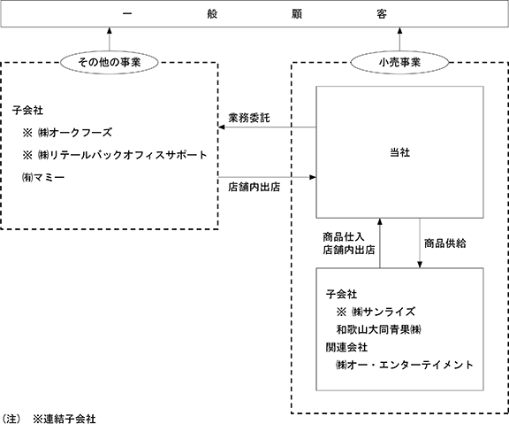

(注) 「収益認識に関する会計基準」（企業会計基準第29号 2020年３月31日）等を第54期の期首から適用しており、第54期以降に係る主要な経営指標等については、当該会計基準等を適用した後の指標等となっております。
(注) １ 「収益認識に関する会計基準」（企業会計基準第29号 2020年３月31日）等を第54期の期首から適用しており、第54期以降に係る主要な経営指標等については、当該会計基準等を適用した後の指標等となっております。
２ 最高株価及び最低株価は、2022年４月３日以前は東京証券取引所市場第一部におけるものであり、2022年４月４日以降は東京証券取引所プライム市場におけるものであります。
当社グループ（当社及び当社の関係会社）は、当社、子会社５社及び関連会社１社により構成され、小売事業としてスーパーマーケット事業をチェーン展開しており、その他の事業として施設管理業務の受託、外食事業等を展開しております。
なお、当社グループにおける報告セグメントは、小売業であるスーパーマーケット事業のみであるため、セグメント別の記載を省略しております。
当社グループの事業に係わる位置付けは、次のとおりであります。
以上に述べた主要事項を事業系統図によって示すと、次のとおりであります。

(注) １ 「主要な事業の内容」欄には、セグメント情報に記載された名称を記載しております。
２ 上記連結子会社は、すべて特定子会社に該当いたしません。
３ 有価証券届出書又は有価証券報告書を提出している会社はありません。
４ ㈱オー・エンターテイメントの持分は、100分の20未満でありますが、実質的な影響力を持っているため関連会社としております。
2024年２月20日現在
(注) １ 従業員数は就業人員であり、パートタイマー数は[ ]内に当連結会計年度平均雇用人員数(一般従業員の標準勤務時間数から換算した人員数)を外数で記載しております。
２ 報告セグメントは、スーパーマーケット事業のみであります。
2024年２月20日現在
(注) １ 従業員数は就業人員であり、パートタイマー数は[ ]内に当事業年度平均雇用人員数(一般従業員の標準勤務時間数から換算した人員数)を外数で記載しております。
２ 平均年間給与は、賞与及び基準外賃金を含んでおります。
３ 当社は、報告セグメントがスーパーマーケット事業のみであるため、セグメント別の従業員数は記載しておりません。
当社の労働組合はオークワ労働組合と称し、ＵＡゼンセンに加盟しております。
2024年２月20日現在における組合員数は 5,264名（正社員1,284名、エリア社員358名、パートタイマー3,622名）であります。
なお、労使関係は円満に推移しており、特記すべき事項はありません。
(4) 管理職に占める女性労働者の割合、男性労働者の育児休業取得率及び労働者の男女の賃金の差異
① 提出会社
(注) １ 「女性の職業生活における活躍の推進に関する法律」（平成27年法律第64号）の規定に基づき算出したものであります。
２ 「育児休業、介護休業等育児又は家族介護を行う労働者の福祉に関する法律」（平成３年法律第76号）の規定に基づき、「育児休業、介護休業等育児又は家族介護を行う労働者の福祉に関する法律施行規則」（平成３年労働省令第25号）第71条の４第１号における育児休業等の取得割合を算出したものであります。
② 連結子会社
(注) １ 「女性の職業生活における活躍の推進に関する法律」（平成27年法律第64号）の規定に基づき算出したものであります。
２ 「育児休業、介護休業等育児又は家族介護を行う労働者の福祉に関する法律」（平成３年法律第76号）の規定に基づき、「育児休業、介護休業等育児又は家族介護を行う労働者の福祉に関する法律施行規則」（平成３年労働省令第25号）第71条の４第１号における育児休業等の取得割合を算出したものであります。
３ 連結子会社のうち、「女性の職業生活における活躍の推進に関する法律」（2015年法律第64号）及び「育児休業、介護休業等育児又は家族介護を行う労働者の福祉に関する法律」（1991年法律第76号）の規定による公表義務の対象でない会社については、記載を省略しております。